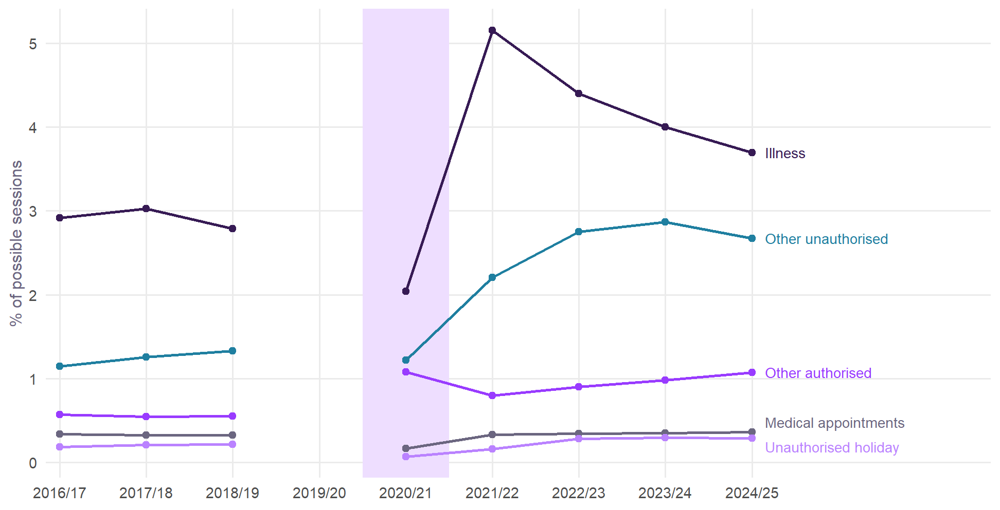
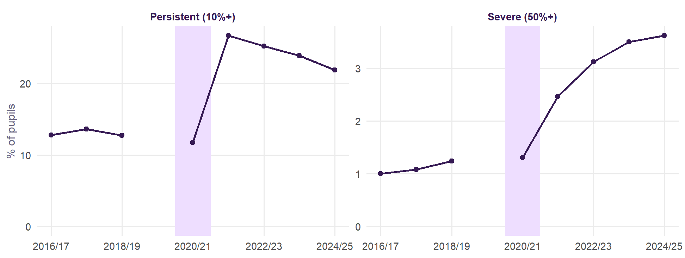
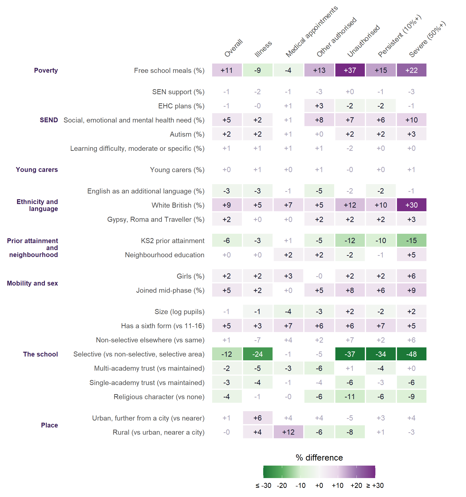
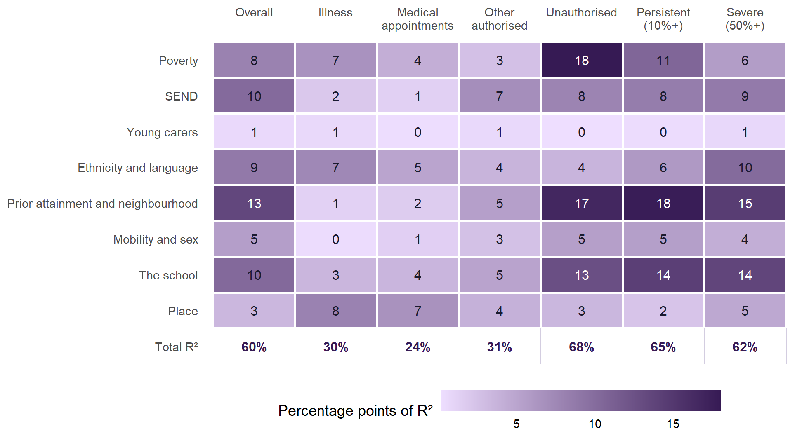
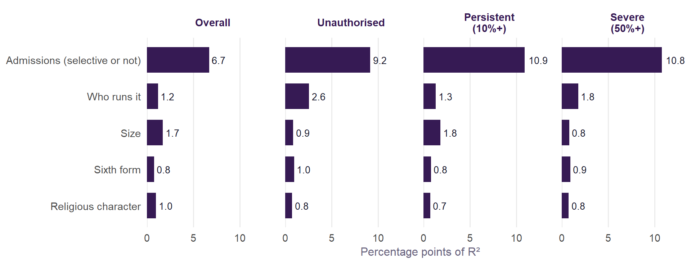
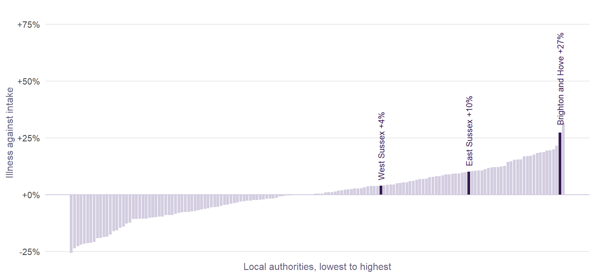

What goes with school absence
A first look at the causes of school-level absence in England’s secondary schools, framed by the research and tested on published data for every school.
NoteWork in progress
This is the first cut of the absence analysis on the roadmap. It describes how absence varies between schools, and with what. It does not yet say why. Every figure comes from published school-level data, so every result is an association between schools, not an effect on pupils.
Why this matters for value added
Absence is the largest single term in Value Added v2.1’s expectation. The model takes each school’s absence as given: a school with more absence is expected to get lower results. That is fair to schools whose absence is outside their control. It is unfair if some of that absence is something the school could have prevented. To tell the two apart, we need to know what absence goes with. This page makes a start.
What the research says
A research map of UK work since 2016 (summarised below; sources at the foot of the page) says absence is not one behaviour with one cause. Health, family, peer, school and wider circumstances all bear on it, and they interact. It is higher in secondary schools, rises with age, and is concentrated among pupils facing poverty, special educational needs, health difficulties and other disadvantage. Absence harms attainment whether or not it is authorised, but it is also a marker of difficulties that were already there.
The post-pandemic rise is real and not fully explained. The leading accounts are:
- more illness;
- anxiety and avoiding school;
- broken routines and weaker attendance norms;
- unmet SEND needs;
- strained relations between home and school;
- slow access to support.
No single cause has been shown to dominate.
Each strand of that research suggests something we can measure for every school in England:
| The research points to | What we can measure for each school | Source |
|---|---|---|
| Physical illness, the most common recorded reason | Illness as a share of possible sessions, as its own outcome | DfE absence data |
| Mental health, anxiety, school-related distress | Pupils whose main SEN need is social, emotional and mental health | DfE SEN data, January 2026 |
| SEND, and gaps that have not closed | SEN support, EHC plans, autism, learning difficulties | DfE SEN data |
| Poverty and family circumstances | Free school meals; young carers | School census, January 2026 |
| Differences by ethnicity and sex | White British, Gypsy, Roma and Traveller, EAL; share of girls | School census |
| Prior attainment and disengagement | KS2 prior attainment; neighbourhood education | Value Added inputs |
| School experience: climate, belonging, fit | Only proxies: size, sixth form, admissions, governance, faith | Census, GIAS |
| Place | Region, local authority, rural or urban | Census |
| Post-COVID norms | The trend by reason; not testable across schools in one year | DfE absence data |
Ofsted grades are left out on purpose. Attendance is part of what an inspection judges, so a grade would partly be absence measured again.
How absence has changed, by reason

The reasons have not moved together:
- Illness jumped from 2.8% of sessions in 2018/19 to 5.2% in 2021/22. By 2024/25 it had fallen back to 3.7%, most of the way home.
- Unauthorised absence other than holidays doubled, from 1.3% to 2.9% in 2023/24. It has barely come down since.
- Severe absence rose every year, from 1.2% of pupils to 3.6%, nearly three times as many.
Persistent absence is falling, but the tail is still growing. That matches the research: the average can improve while the worst cases get worse.
What goes with absence, school by school
The model covers 3,147 state-funded secondary schools with full data. It uses their absence in the autumn and spring terms of 2025/26 and their intake as recorded in the January 2026 school census and SEN data. For each of seven outcomes, it is a multilevel model of the outcome (logged) on all the characteristics at once, with region and local authority effects.
Each number below is the difference in that kind of absence that goes with one standard deviation more of a characteristic, all else equal. A standard deviation is roughly the gap between a typical school and one noticeably above it. For yes-or-no characteristics, the number compares the two kinds of school. Purple means more absence, green less. Blank cells are differences that could be zero.

What stands out:
- Poverty, prior attainment and mobility go with the absence a school has least claim to. With one SD more pupils on free school meals, unauthorised absence is +37% and severe absence +22%. Illness, once everything else is allowed for, is -9%. Lower KS2 prior attainment and more pupils joining mid-phase point the same way.
- Among the types of need, social, emotional and mental health need is the one that matters. One SD more of it goes with +10% severe and +8% other authorised absence. Once the types of need are in the model, the share of pupils on SEN support or with EHC plans adds nothing more. This fits the research’s emphasis on anxiety and distress.
- Schools with more White British pupils have more absence of every kind, especially severe (+30% per SD) and unauthorised (+12%). EAL goes the other way. This is a comparison between schools, not pupils. It matches the national statistics, where absence is lower among most minority ethnic groups. It does not say why.
- Girls. Schools with more girls have more medical-appointment (+3%) and severe absence (+6%). This matches the research finding that girls are absent more than boys.
- The school.
- Selective schools have far less unauthorised (-37%) and severe absence (-48%) than intake alone predicts.
- Schools with a religious character have somewhat less (-11% unauthorised).
- Schools with a sixth form have more absence among their 11-16 pupils (+5% overall). This echoes Value Added v2.1, where 11-16 schools do better.
- Being in a multi-academy trust makes little difference.
- Place. Rural schools record +12% absence for medical appointments and -8% unauthorised absence, against urban schools near a city. A plausible reading is that getting to an appointment from a rural school costs a whole session rather than part of one. That bears on the distance-to-school question.
- Young carers barely register. This is more likely a measurement problem than a finding: schools differ widely in how many young carers they identify.
How much each group explains

The kinds of absence split cleanly in two:
- Unauthorised, persistent and severe absence are mostly about who the pupils are. Intake and school characteristics account for between 62% and 68% of the variation. Poverty, prior attainment and the school itself carry most of it.
- Illness and medical appointments are mostly not. Only 30% and 24% is accounted for, and Place is the largest single group for both. Two schools with the same intake can record very different amounts of illness.
That is the case for v2.1’s sensitivity test that counts illness separately from other absence (Methodology).
The school’s part
“The school” carries 13 to 14 points of R² for unauthorised, persistent and severe absence above. That does not mean schools are to blame for that much absence. The group is five measured features:
- size;
- whether the school has a sixth form;
- its admissions (selective, or non-selective);
- who runs it;
- whether it has a religious character.
What schools do is not measured at all. Splitting the group into its five features shows where the credit goes:

Most of it is selection. Admissions accounts for 9.2 of the points for unauthorised absence, 10.9 for persistent and 10.8 for severe. Selective schools choose their pupils. Prior attainment and free school meals measure some of what selection does, but not all of it, and admissions picks up the rest. That is a fact about who comes to the school, not about how it is run. Who runs it (2.6 points), size, sixth form and religious character each add little.
What a school does shows up somewhere else: in how far apart similar schools are. Take schools with the same intake, needs and setting, in the same local authority. What is left over (the models’ school-level residuals) is what the measured characteristics cannot explain. That includes how a school runs attendance, and also anything about its pupils the data does not see.
| Outcome | Quarter from top vs quarter from bottom | Tenth from top vs tenth from bottom | Correlation with 2024/25 | Top quarter in 2025/26 also top quarter in 2024/25 |
|---|---|---|---|---|
| Overall absence | +24% | +52% | 0.84 | 70% |
| Illness | +33% | +76% | 0.81 | 68% |
| Medical appointments | +36% | +82% | 0.78 | 68% |
| Other authorised | +61% | +157% | 0.73 | 63% |
| Unauthorised | +53% | +133% | 0.81 | 70% |
| Persistent absence (10%+) | +31% | +73% | 0.84 | 68% |
| Severe absence (50%+) | +67% | +174% | 0.70 | 62% |
- The gaps are large. Among otherwise similar schools in the same authority, the one a quarter of the way from the top has 53% more unauthorised absence than the one a quarter of the way from the bottom. For severe absence the gap is 67%; for overall absence, 24%.
- They repeat. A school’s unexplained absence in 2025/26 correlates 0.81 with its own in 2024/25 for unauthorised absence, and 0.84 overall. Of the schools in the top quarter for unexplained unauthorised absence in 2025/26, 70% were in the top quarter the year before; chance would give 25%. These are stable features of schools or their communities, not noise.
- That stability is not proof of a school effect. The same 2026 characteristics are used for both years, and pupils the data does not see are as stable as a school’s practice. Only following schools whose practice changed would separate the two.
TipFor heads and governors
- Judge absence against what your intake predicts, not against the national average. The area pages give each Sussex school’s absence by kind, its prediction, and how it compares with similar schools in the same authority over two years.
- Structure is not the lever. Being in a multi-academy trust, its size, and its religious character make little difference once intake is allowed for. Most of what looks like a “school” effect in the averages is selective admissions, which is about who is admitted.
- Practice may well be the lever. Schools with the same intake differ by half again or more in unauthorised and severe absence, and the differences persist. A school well above similar schools, year after year, should ask what its look-alikes below the line are doing differently.
- Look at the kind of absence. Unauthorised, persistent and severe absence are where similar schools differ most. Illness differs mostly by place, and partly by how readily it is authorised.
- The research points to where to look. It is consistent on:
- early identification;
- relationships and belonging;
- support for social, emotional and mental health needs (the type of need that goes most with absence here);
- work with families. Parental engagement is the one approach with consistent support from randomised trials, though most were in the United States.
- Find a twin finds the schools in England most like yours in intake and setting. It also finds anti-twins: the look-alikes with much lower absence, or much higher value added. These are the schools worth calling.
- Schools with a sixth form have +5% more absence among their 11-16 pupils than comparable 11-16 schools. That is worth a look in 11-18 schools.
Place, once the intake is allowed for
| Outcome | Region and authority, before | Region and authority, after | Explained by the characteristics |
|---|---|---|---|
| Overall absence | 14% | 5% | 59% |
| Illness | 31% | 14% | 26% |
| Medical appointments | 20% | 9% | 20% |
| Other authorised | 13% | 12% | 25% |
| Unauthorised | 19% | 4% | 68% |
| Persistent absence (10%+) | 11% | 3% | 65% |
| Severe absence (50%+) | 18% | 4% | 60% |
For most kinds of absence, a school’s region and authority matter little once its intake is known. Illness and other authorised absence are the exceptions: about 14% and 12% of the variation between schools is still at the region and authority levels after allowing for intake. Both are kinds of absence a school chooses to authorise. Some places’ schools record more illness than their intakes predict. That could be because their pupils really are ill more often. It could also be because schools in those places authorise absence as illness more readily, so that the same absence elsewhere would be recorded as unauthorised. The data cannot tell these apart.

Brighton and Hove records +27% more illness absence than its schools’ intakes predict, the 2nd highest of 152 authorities. Its unauthorised absence is -5% against intake (110th). The city’s high absence, which the Geographical effects page finds costs its pupils so little attainment, is illness absence, and its intake does not explain it. That fits both readings above: an unusual amount of illness, or a habit of authorising absence as illness that elsewhere would go unauthorised. Which it is matters for value added. If it is recording, the city’s absence is not the kind that costs attainment, and the model’s absence term over-forgives it.
The full models
Each of the seven outcomes has the same multilevel model. For school \(i\) in local authority \(j\) in region \(k\):
\[\log(y_{ijk} + 0.1) = \beta_0 + \sum_p \beta_p\, x_{p,ijk} + u_k + v_{jk} + e_{ijk}\]
\[u_k \sim N(0, \sigma^2_{\text{region}}), \quad v_{jk} \sim N(0, \sigma^2_{\text{LA}}), \quad e_{ijk} \sim N(0, \sigma^2_{\text{school}})\]
- The outcome \(y\) is a percentage: of possible sessions for the five kinds of absence, of pupils for persistent and severe. The 0.1 lets severe absence be zero.
- The measured characteristics \(x\) are standardised to mean 0 and SD 1, so each \(\beta\) is the change in log absence for one SD, and \(100\,(e^{\beta} - 1)\) is the % difference shown in Figure 3.
- The categories are compared with a reference: 11-16, non-selective in a selective area, maintained, no religious character, and urban near a major town or city.
- Estimation is REML in
lme4. The log-likelihoods, AIC and BIC are from the same models refitted by maximum likelihood. The marginal R² is the variance of the fixed-effect predictions over the total; the conditional R² adds the region and authority effects (Nakagawa and Schielzeth). “Explained by the characteristics” is the fall in total variance from the model with no characteristics.
| Term | Estimate | SE | t | % difference (95% CI) |
|---|---|---|---|---|
| Intercept (reference school, mean characteristics) | 2.059 | 0.025 | 81.4 | |
| Free school meals (%) | 0.102 | 0.006 | 16.0 | +10.7 (+9.3 to +12.1) |
| SEN support (%) | -0.015 | 0.009 | -1.7 | -1.5 (-3.1 to +0.2) |
| EHC plans (%) | -0.006 | 0.005 | -1.2 | -0.6 (-1.5 to +0.4) |
| Social, emotional and mental health need (%) | 0.048 | 0.006 | 7.6 | +4.9 (+3.6 to +6.2) |
| Autism (%) | 0.016 | 0.005 | 3.3 | +1.6 (+0.6 to +2.5) |
| Learning difficulty, moderate or specific (%) | 0.006 | 0.006 | 0.9 | +0.6 (-0.6 to +1.8) |
| Young carers (%) | 0.002 | 0.004 | 0.4 | +0.2 (-0.6 to +0.9) |
| English as an additional language (%) | -0.027 | 0.008 | -3.3 | -2.6 (-4.2 to -1.1) |
| White British (%) | 0.089 | 0.010 | 9.2 | +9.3 (+7.2 to +11.4) |
| Gypsy, Roma and Traveller (%) | 0.019 | 0.004 | 5.3 | +1.9 (+1.2 to +2.7) |
| Girls (%) | 0.016 | 0.003 | 4.8 | +1.6 (+0.9 to +2.3) |
| Joined mid-phase (%) | 0.045 | 0.004 | 11.5 | +4.6 (+3.8 to +5.4) |
| KS2 prior attainment | -0.064 | 0.007 | -8.7 | -6.2 (-7.5 to -4.8) |
| Neighbourhood education | 0.001 | 0.005 | 0.1 | +0.1 (-0.9 to +1.1) |
| Size (log pupils) | -0.006 | 0.004 | -1.5 | -0.6 (-1.4 to +0.2) |
| Has a sixth form (vs 11-16) | 0.051 | 0.009 | 6.0 | +5.3 (+3.5 to +7.0) |
| Non-selective elsewhere (vs same) | 0.014 | 0.022 | 0.6 | +1.4 (-2.8 to +5.8) |
| Selective (vs non-selective, selective area) | -0.130 | 0.030 | -4.4 | -12.2 (-17.2 to -7.0) |
| Multi-academy trust (vs maintained) | -0.024 | 0.010 | -2.5 | -2.4 (-4.2 to -0.5) |
| Single-academy trust (vs maintained) | -0.027 | 0.012 | -2.2 | -2.7 (-5.0 to -0.3) |
| Religious character (vs none) | -0.044 | 0.009 | -4.9 | -4.3 (-6.0 to -2.6) |
| Urban, further from a city (vs nearer) | 0.012 | 0.015 | 0.8 | +1.2 (-1.7 to +4.2) |
| Rural (vs urban, nearer a city) | -0.005 | 0.012 | -0.4 | -0.5 (-2.7 to +1.8) |
| Level | Variance, no characteristics | Variance, full model | Share of the starting total, after |
|---|---|---|---|
| Region | 0.0066 | 0.0006 | 1% |
| Local authority | 0.0057 | 0.0034 | 4% |
| School | 0.0767 | 0.0323 | 36% |
| Measure | Value |
|---|---|
| Schools | 3,147 |
| Local authorities | 152 |
| Regions | 9 |
| Mean outcome (%) | 8.14 |
| Explained by the characteristics | 0.591 |
| Marginal R² (fixed effects) | 0.594 |
| Conditional R² (with region and authority) | 0.639 |
| OLS R² (Shapley total, region fixed) | 0.601 |
| Log-likelihood (ML) | 861.7 |
| Log-likelihood, no characteristics (ML) | -500.0 |
| AIC | -1669.3 |
| BIC | -1505.9 |
| Term | Estimate | SE | t | % difference (95% CI) |
|---|---|---|---|---|
| Intercept (reference school, mean characteristics) | 1.356 | 0.045 | 30.1 | |
| Free school meals (%) | -0.094 | 0.010 | -9.5 | -9.0 (-10.7 to -7.2) |
| SEN support (%) | -0.015 | 0.013 | -1.2 | -1.5 (-4.0 to +1.0) |
| EHC plans (%) | -0.000 | 0.007 | -0.1 | -0.0 (-1.5 to +1.4) |
| Social, emotional and mental health need (%) | 0.024 | 0.010 | 2.5 | +2.4 (+0.5 to +4.3) |
| Autism (%) | 0.017 | 0.007 | 2.4 | +1.7 (+0.3 to +3.2) |
| Learning difficulty, moderate or specific (%) | 0.010 | 0.009 | 1.1 | +1.0 (-0.7 to +2.9) |
| Young carers (%) | 0.008 | 0.006 | 1.4 | +0.8 (-0.4 to +1.9) |
| English as an additional language (%) | -0.029 | 0.012 | -2.4 | -2.9 (-5.2 to -0.5) |
| White British (%) | 0.052 | 0.015 | 3.5 | +5.3 (+2.3 to +8.4) |
| Gypsy, Roma and Traveller (%) | 0.001 | 0.005 | 0.1 | +0.1 (-1.0 to +1.2) |
| Girls (%) | 0.018 | 0.005 | 3.7 | +1.8 (+0.8 to +2.8) |
| Joined mid-phase (%) | 0.015 | 0.006 | 2.6 | +1.5 (+0.4 to +2.7) |
| KS2 prior attainment | -0.030 | 0.011 | -2.7 | -3.0 (-5.1 to -0.9) |
| Neighbourhood education | 0.004 | 0.008 | 0.5 | +0.4 (-1.2 to +1.9) |
| Size (log pupils) | -0.012 | 0.006 | -2.0 | -1.2 (-2.4 to -0.0) |
| Has a sixth form (vs 11-16) | 0.033 | 0.013 | 2.6 | +3.4 (+0.8 to +6.0) |
| Non-selective elsewhere (vs same) | -0.068 | 0.035 | -1.9 | -6.5 (-12.8 to +0.2) |
| Selective (vs non-selective, selective area) | -0.274 | 0.045 | -6.1 | -24.0 (-30.4 to -17.0) |
| Multi-academy trust (vs maintained) | -0.046 | 0.015 | -3.2 | -4.5 (-7.2 to -1.8) |
| Single-academy trust (vs maintained) | -0.037 | 0.019 | -2.0 | -3.7 (-7.1 to -0.1) |
| Religious character (vs none) | -0.011 | 0.014 | -0.8 | -1.1 (-3.8 to +1.5) |
| Urban, further from a city (vs nearer) | 0.062 | 0.023 | 2.7 | +6.4 (+1.8 to +11.2) |
| Rural (vs urban, nearer a city) | 0.039 | 0.018 | 2.2 | +4.0 (+0.4 to +7.6) |
| Level | Variance, no characteristics | Variance, full model | Share of the starting total, after |
|---|---|---|---|
| Region | 0.0135 | 0.0046 | 4% |
| Local authority | 0.0243 | 0.0128 | 11% |
| School | 0.0833 | 0.0726 | 60% |
| Measure | Value |
|---|---|
| Schools | 3,147 |
| Local authorities | 152 |
| Regions | 9 |
| Mean outcome (%) | 3.71 |
| Explained by the characteristics | 0.257 |
| Marginal R² (fixed effects) | 0.218 |
| Conditional R² (with region and authority) | 0.369 |
| OLS R² (Shapley total, region fixed) | 0.296 |
| Log-likelihood (ML) | -440.5 |
| Log-likelihood, no characteristics (ML) | -700.7 |
| AIC | 935.0 |
| BIC | 1098.5 |
| Term | Estimate | SE | t | % difference (95% CI) |
|---|---|---|---|---|
| Intercept (reference school, mean characteristics) | -0.869 | 0.037 | -23.5 | |
| Free school meals (%) | -0.043 | 0.009 | -4.9 | -4.2 (-5.9 to -2.6) |
| SEN support (%) | -0.007 | 0.012 | -0.6 | -0.7 (-3.0 to +1.6) |
| EHC plans (%) | 0.007 | 0.007 | 1.0 | +0.7 (-0.6 to +2.0) |
| Social, emotional and mental health need (%) | 0.006 | 0.009 | 0.7 | +0.6 (-1.1 to +2.4) |
| Autism (%) | 0.007 | 0.007 | 1.0 | +0.7 (-0.6 to +2.0) |
| Learning difficulty, moderate or specific (%) | 0.009 | 0.008 | 1.0 | +0.9 (-0.8 to +2.5) |
| Young carers (%) | 0.002 | 0.005 | 0.4 | +0.2 (-0.8 to +1.2) |
| English as an additional language (%) | -0.007 | 0.011 | -0.7 | -0.7 (-2.9 to +1.5) |
| White British (%) | 0.071 | 0.013 | 5.3 | +7.4 (+4.6 to +10.2) |
| Gypsy, Roma and Traveller (%) | 0.001 | 0.005 | 0.2 | +0.1 (-0.9 to +1.1) |
| Girls (%) | 0.033 | 0.005 | 7.3 | +3.4 (+2.5 to +4.3) |
| Joined mid-phase (%) | 0.004 | 0.005 | 0.7 | +0.4 (-0.7 to +1.5) |
| KS2 prior attainment | 0.012 | 0.010 | 1.2 | +1.2 (-0.8 to +3.2) |
| Neighbourhood education | 0.021 | 0.007 | 2.9 | +2.1 (+0.7 to +3.5) |
| Size (log pupils) | -0.041 | 0.006 | -7.1 | -4.0 (-5.1 to -2.9) |
| Has a sixth form (vs 11-16) | 0.063 | 0.012 | 5.4 | +6.5 (+4.1 to +9.0) |
| Non-selective elsewhere (vs same) | 0.038 | 0.029 | 1.3 | +3.8 (-1.9 to +9.9) |
| Selective (vs non-selective, selective area) | -0.013 | 0.041 | -0.3 | -1.3 (-8.9 to +7.0) |
| Multi-academy trust (vs maintained) | -0.032 | 0.013 | -2.4 | -3.2 (-5.7 to -0.6) |
| Single-academy trust (vs maintained) | -0.006 | 0.017 | -0.3 | -0.6 (-3.8 to +2.8) |
| Religious character (vs none) | -0.003 | 0.013 | -0.2 | -0.3 (-2.7 to +2.2) |
| Urban, further from a city (vs nearer) | 0.039 | 0.021 | 1.9 | +3.9 (-0.2 to +8.2) |
| Rural (vs urban, nearer a city) | 0.112 | 0.016 | 7.0 | +11.9 (+8.4 to +15.5) |
| Level | Variance, no characteristics | Variance, full model | Share of the starting total, after |
|---|---|---|---|
| Region | 0.0032 | 0.0028 | 3% |
| Local authority | 0.0148 | 0.0056 | 6% |
| School | 0.0702 | 0.0619 | 70% |
| Measure | Value |
|---|---|
| Schools | 3,147 |
| Local authorities | 152 |
| Regions | 9 |
| Mean outcome (%) | 0.37 |
| Explained by the characteristics | 0.203 |
| Marginal R² (fixed effects) | 0.207 |
| Conditional R² (with region and authority) | 0.301 |
| OLS R² (Shapley total, region fixed) | 0.238 |
| Log-likelihood (ML) | -156.6 |
| Log-likelihood, no characteristics (ML) | -406.7 |
| AIC | 367.2 |
| BIC | 530.6 |
| Term | Estimate | SE | t | % difference (95% CI) |
|---|---|---|---|---|
| Intercept (reference school, mean characteristics) | 0.046 | 0.062 | 0.7 | |
| Free school meals (%) | 0.123 | 0.014 | 8.9 | +13.1 (+10.1 to +16.3) |
| SEN support (%) | -0.026 | 0.019 | -1.4 | -2.6 (-6.1 to +1.0) |
| EHC plans (%) | 0.030 | 0.010 | 2.9 | +3.0 (+0.9 to +5.2) |
| Social, emotional and mental health need (%) | 0.080 | 0.014 | 5.9 | +8.3 (+5.4 to +11.2) |
| Autism (%) | 0.005 | 0.010 | 0.5 | +0.5 (-1.5 to +2.5) |
| Learning difficulty, moderate or specific (%) | 0.014 | 0.013 | 1.1 | +1.5 (-1.1 to +4.1) |
| Young carers (%) | 0.014 | 0.008 | 1.7 | +1.4 (-0.3 to +3.0) |
| English as an additional language (%) | -0.047 | 0.017 | -2.7 | -4.6 (-7.8 to -1.3) |
| White British (%) | 0.053 | 0.021 | 2.5 | +5.4 (+1.1 to +9.9) |
| Gypsy, Roma and Traveller (%) | 0.022 | 0.008 | 2.8 | +2.2 (+0.6 to +3.7) |
| Girls (%) | -0.002 | 0.007 | -0.3 | -0.2 (-1.6 to +1.2) |
| Joined mid-phase (%) | 0.047 | 0.008 | 5.6 | +4.8 (+3.1 to +6.6) |
| KS2 prior attainment | -0.052 | 0.016 | -3.3 | -5.0 (-7.9 to -2.0) |
| Neighbourhood education | 0.023 | 0.011 | 2.1 | +2.4 (+0.2 to +4.6) |
| Size (log pupils) | -0.028 | 0.009 | -3.1 | -2.7 (-4.4 to -1.0) |
| Has a sixth form (vs 11-16) | 0.061 | 0.018 | 3.3 | +6.3 (+2.5 to +10.2) |
| Non-selective elsewhere (vs same) | 0.021 | 0.048 | 0.4 | +2.1 (-7.0 to +12.1) |
| Selective (vs non-selective, selective area) | -0.053 | 0.064 | -0.8 | -5.2 (-16.4 to +7.5) |
| Multi-academy trust (vs maintained) | -0.064 | 0.021 | -3.1 | -6.2 (-10.0 to -2.4) |
| Single-academy trust (vs maintained) | -0.041 | 0.026 | -1.5 | -4.0 (-8.8 to +1.1) |
| Religious character (vs none) | -0.062 | 0.020 | -3.2 | -6.0 (-9.6 to -2.4) |
| Urban, further from a city (vs nearer) | 0.039 | 0.032 | 1.2 | +4.0 (-2.4 to +10.8) |
| Rural (vs urban, nearer a city) | -0.058 | 0.025 | -2.3 | -5.6 (-10.1 to -0.8) |
| Level | Variance, no characteristics | Variance, full model | Share of the starting total, after |
|---|---|---|---|
| Region | 0.0110 | 0.0089 | 4% |
| Local authority | 0.0186 | 0.0186 | 8% |
| School | 0.2066 | 0.1489 | 63% |
| Measure | Value |
|---|---|
| Schools | 3,147 |
| Local authorities | 152 |
| Regions | 9 |
| Mean outcome (%) | 1.06 |
| Explained by the characteristics | 0.253 |
| Marginal R² (fixed effects) | 0.268 |
| Conditional R² (with region and authority) | 0.383 |
| OLS R² (Shapley total, region fixed) | 0.307 |
| Log-likelihood (ML) | -1553.4 |
| Log-likelihood, no characteristics (ML) | -2065.3 |
| AIC | 3160.9 |
| BIC | 3324.4 |
| Term | Estimate | SE | t | % difference (95% CI) |
|---|---|---|---|---|
| Intercept (reference school, mean characteristics) | 0.929 | 0.052 | 17.9 | |
| Free school meals (%) | 0.313 | 0.013 | 24.3 | +36.7 (+33.3 to +40.2) |
| SEN support (%) | 0.002 | 0.017 | 0.1 | +0.2 (-3.1 to +3.7) |
| EHC plans (%) | -0.024 | 0.010 | -2.4 | -2.4 (-4.2 to -0.5) |
| Social, emotional and mental health need (%) | 0.064 | 0.013 | 5.1 | +6.6 (+4.0 to +9.3) |
| Autism (%) | 0.021 | 0.010 | 2.2 | +2.1 (+0.2 to +4.0) |
| Learning difficulty, moderate or specific (%) | -0.016 | 0.012 | -1.3 | -1.5 (-3.9 to +0.8) |
| Young carers (%) | -0.003 | 0.008 | -0.4 | -0.3 (-1.8 to +1.2) |
| English as an additional language (%) | -0.020 | 0.016 | -1.2 | -1.9 (-5.0 to +1.2) |
| White British (%) | 0.114 | 0.019 | 5.8 | +12.1 (+7.9 to +16.4) |
| Gypsy, Roma and Traveller (%) | 0.015 | 0.007 | 2.1 | +1.5 (+0.1 to +3.0) |
| Girls (%) | 0.021 | 0.007 | 3.1 | +2.1 (+0.8 to +3.4) |
| Joined mid-phase (%) | 0.079 | 0.008 | 9.9 | +8.2 (+6.5 to +9.9) |
| KS2 prior attainment | -0.130 | 0.015 | -8.9 | -12.2 (-14.7 to -9.6) |
| Neighbourhood education | -0.022 | 0.010 | -2.1 | -2.2 (-4.1 to -0.2) |
| Size (log pupils) | 0.021 | 0.008 | 2.6 | +2.2 (+0.5 to +3.9) |
| Has a sixth form (vs 11-16) | 0.056 | 0.017 | 3.3 | +5.8 (+2.3 to +9.4) |
| Non-selective elsewhere (vs same) | 0.068 | 0.044 | 1.5 | +7.0 (-1.9 to +16.7) |
| Selective (vs non-selective, selective area) | -0.469 | 0.060 | -7.9 | -37.5 (-44.4 to -29.7) |
| Multi-academy trust (vs maintained) | 0.005 | 0.019 | 0.3 | +0.5 (-3.2 to +4.4) |
| Single-academy trust (vs maintained) | -0.066 | 0.025 | -2.7 | -6.4 (-10.8 to -1.7) |
| Religious character (vs none) | -0.113 | 0.018 | -6.2 | -10.7 (-13.8 to -7.4) |
| Urban, further from a city (vs nearer) | -0.055 | 0.030 | -1.8 | -5.3 (-10.7 to +0.4) |
| Rural (vs urban, nearer a city) | -0.086 | 0.023 | -3.7 | -8.2 (-12.3 to -3.9) |
| Level | Variance, no characteristics | Variance, full model | Share of the starting total, after |
|---|---|---|---|
| Region | 0.0332 | 0.0025 | 1% |
| Local authority | 0.0544 | 0.0159 | 3% |
| School | 0.3694 | 0.1297 | 28% |
| Measure | Value |
|---|---|
| Schools | 3,147 |
| Local authorities | 152 |
| Regions | 9 |
| Mean outcome (%) | 3.00 |
| Explained by the characteristics | 0.676 |
| Marginal R² (fixed effects) | 0.664 |
| Conditional R² (with region and authority) | 0.706 |
| OLS R² (Shapley total, region fixed) | 0.679 |
| Log-likelihood (ML) | -1331.4 |
| Log-likelihood, no characteristics (ML) | -3004.1 |
| AIC | 2716.8 |
| BIC | 2880.2 |
| Term | Estimate | SE | t | % difference (95% CI) |
|---|---|---|---|---|
| Intercept (reference school, mean characteristics) | 3.021 | 0.031 | 96.3 | |
| Free school meals (%) | 0.140 | 0.008 | 17.0 | +15.1 (+13.2 to +17.0) |
| SEN support (%) | -0.015 | 0.011 | -1.3 | -1.5 (-3.7 to +0.8) |
| EHC plans (%) | -0.019 | 0.006 | -2.9 | -1.8 (-3.1 to -0.6) |
| Social, emotional and mental health need (%) | 0.054 | 0.008 | 6.5 | +5.6 (+3.9 to +7.3) |
| Autism (%) | 0.017 | 0.006 | 2.8 | +1.7 (+0.5 to +3.0) |
| Learning difficulty, moderate or specific (%) | 0.002 | 0.008 | 0.2 | +0.2 (-1.4 to +1.8) |
| Young carers (%) | 0.000 | 0.005 | 0.0 | +0.0 (-1.0 to +1.0) |
| English as an additional language (%) | -0.021 | 0.011 | -2.0 | -2.1 (-4.1 to -0.1) |
| White British (%) | 0.097 | 0.013 | 7.7 | +10.2 (+7.5 to +13.0) |
| Gypsy, Roma and Traveller (%) | 0.019 | 0.005 | 4.0 | +1.9 (+1.0 to +2.9) |
| Girls (%) | 0.018 | 0.004 | 4.2 | +1.9 (+1.0 to +2.7) |
| Joined mid-phase (%) | 0.054 | 0.005 | 10.3 | +5.6 (+4.5 to +6.7) |
| KS2 prior attainment | -0.100 | 0.010 | -10.4 | -9.6 (-11.2 to -7.8) |
| Neighbourhood education | -0.012 | 0.007 | -1.8 | -1.2 (-2.5 to +0.1) |
| Size (log pupils) | -0.017 | 0.006 | -3.1 | -1.7 (-2.8 to -0.6) |
| Has a sixth form (vs 11-16) | 0.071 | 0.011 | 6.3 | +7.4 (+5.1 to +9.8) |
| Non-selective elsewhere (vs same) | 0.018 | 0.027 | 0.7 | +1.8 (-3.4 to +7.3) |
| Selective (vs non-selective, selective area) | -0.414 | 0.039 | -10.5 | -33.9 (-38.8 to -28.6) |
| Multi-academy trust (vs maintained) | -0.040 | 0.013 | -3.1 | -3.9 (-6.3 to -1.5) |
| Single-academy trust (vs maintained) | -0.030 | 0.016 | -1.8 | -3.0 (-6.0 to +0.2) |
| Religious character (vs none) | -0.063 | 0.012 | -5.2 | -6.1 (-8.3 to -3.9) |
| Urban, further from a city (vs nearer) | 0.030 | 0.020 | 1.5 | +3.0 (-0.9 to +7.1) |
| Rural (vs urban, nearer a city) | 0.011 | 0.015 | 0.7 | +1.1 (-1.9 to +4.3) |
| Level | Variance, no characteristics | Variance, full model | Share of the starting total, after |
|---|---|---|---|
| Region | 0.0082 | 0.0006 | 0% |
| Local authority | 0.0114 | 0.0041 | 2% |
| School | 0.1571 | 0.0579 | 33% |
| Measure | Value |
|---|---|
| Schools | 3,147 |
| Local authorities | 152 |
| Regions | 9 |
| Mean outcome (%) | 21.97 |
| Explained by the characteristics | 0.646 |
| Marginal R² (fixed effects) | 0.648 |
| Conditional R² (with region and authority) | 0.675 |
| OLS R² (Shapley total, region fixed) | 0.650 |
| Log-likelihood (ML) | -37.1 |
| Log-likelihood, no characteristics (ML) | -1625.2 |
| AIC | 128.1 |
| BIC | 291.6 |
| Term | Estimate | SE | t | % difference (95% CI) |
|---|---|---|---|---|
| Intercept (reference school, mean characteristics) | 1.098 | 0.064 | 17.2 | |
| Free school meals (%) | 0.199 | 0.015 | 12.9 | +22.0 (+18.3 to +25.7) |
| SEN support (%) | -0.030 | 0.021 | -1.4 | -3.0 (-6.9 to +1.1) |
| EHC plans (%) | -0.007 | 0.012 | -0.6 | -0.7 (-2.9 to +1.7) |
| Social, emotional and mental health need (%) | 0.091 | 0.015 | 6.0 | +9.6 (+6.3 to +12.9) |
| Autism (%) | 0.031 | 0.011 | 2.7 | +3.1 (+0.8 to +5.4) |
| Learning difficulty, moderate or specific (%) | 0.001 | 0.015 | 0.1 | +0.1 (-2.8 to +3.0) |
| Young carers (%) | 0.008 | 0.009 | 0.9 | +0.8 (-1.0 to +2.7) |
| English as an additional language (%) | -0.010 | 0.020 | -0.5 | -1.0 (-4.7 to +2.9) |
| White British (%) | 0.259 | 0.024 | 11.0 | +29.5 (+23.7 to +35.6) |
| Gypsy, Roma and Traveller (%) | 0.026 | 0.009 | 2.9 | +2.6 (+0.9 to +4.4) |
| Girls (%) | 0.056 | 0.008 | 6.9 | +5.7 (+4.1 to +7.4) |
| Joined mid-phase (%) | 0.090 | 0.010 | 9.4 | +9.4 (+7.4 to +11.5) |
| KS2 prior attainment | -0.161 | 0.018 | -9.1 | -14.9 (-17.8 to -11.9) |
| Neighbourhood education | 0.046 | 0.012 | 3.7 | +4.7 (+2.2 to +7.3) |
| Size (log pupils) | 0.020 | 0.010 | 2.0 | +2.0 (+0.0 to +4.1) |
| Has a sixth form (vs 11-16) | 0.047 | 0.021 | 2.3 | +4.8 (+0.6 to +9.1) |
| Non-selective elsewhere (vs same) | 0.060 | 0.050 | 1.2 | +6.2 (-3.7 to +17.1) |
| Selective (vs non-selective, selective area) | -0.658 | 0.072 | -9.1 | -48.2 (-55.1 to -40.3) |
| Multi-academy trust (vs maintained) | 0.002 | 0.023 | 0.1 | +0.2 (-4.3 to +4.9) |
| Single-academy trust (vs maintained) | -0.061 | 0.030 | -2.0 | -5.9 (-11.3 to -0.2) |
| Religious character (vs none) | -0.093 | 0.022 | -4.2 | -8.8 (-12.7 to -4.8) |
| Urban, further from a city (vs nearer) | 0.041 | 0.036 | 1.1 | +4.2 (-2.9 to +11.8) |
| Rural (vs urban, nearer a city) | -0.029 | 0.028 | -1.0 | -2.9 (-8.1 to +2.7) |
| Level | Variance, no characteristics | Variance, full model | Share of the starting total, after |
|---|---|---|---|
| Region | 0.0530 | 0.0083 | 2% |
| Local authority | 0.0434 | 0.0149 | 3% |
| School | 0.4468 | 0.1929 | 36% |
| Measure | Value |
|---|---|
| Schools | 3,147 |
| Local authorities | 152 |
| Regions | 9 |
| Mean outcome (%) | 3.65 |
| Explained by the characteristics | 0.602 |
| Marginal R² (fixed effects) | 0.588 |
| Conditional R² (with region and authority) | 0.632 |
| OLS R² (Shapley total, region fixed) | 0.622 |
| Log-likelihood (ML) | -1938.2 |
| Log-likelihood, no characteristics (ML) | -3285.2 |
| AIC | 3930.5 |
| BIC | 4093.9 |
What one standard deviation is, in each characteristic’s own units, for the 3,147 schools in the models, and how many schools fall in each category:
| Characteristic | Mean | One SD |
|---|---|---|
| Free school meals (%) | 28.76 | 14.66 |
| SEN support (%) | 14.61 | 5.84 |
| EHC plans (%) | 3.68 | 2.11 |
| Social, emotional and mental health need (%) | 5.00 | 2.71 |
| Autism (%) | 3.02 | 2.01 |
| Learning difficulty, moderate or specific (%) | 5.60 | 3.14 |
| Young carers (%) | 1.49 | 1.85 |
| English as an additional language (%) | 19.06 | 17.89 |
| White British (%) | 60.41 | 28.97 |
| Gypsy, Roma and Traveller (%) | 0.27 | 0.86 |
| Girls (%) | 49.56 | 16.33 |
| Joined mid-phase (%) | 4.49 | 3.87 |
| KS2 prior attainment | 4.48 | 2.72 |
| Neighbourhood education | -0.00 | 1.00 |
| Size (log pupils) | 6.92 | 0.41 |
| Characteristic | Category | Schools |
|---|---|---|
| Sixth form | No | 1178 |
| Sixth form | Yes | 1969 |
| Admissions | Non-selective in a selective area | 203 |
| Admissions | Non-selective elsewhere | 2781 |
| Admissions | Selective | 163 |
| Governance | Maintained | 526 |
| Governance | Multi-academy trust | 2129 |
| Governance | Single-academy trust or not recorded | 492 |
| Religious character | No | 2578 |
| Religious character | Yes | 569 |
| Rural or urban | Urban, near a major town or city | 2519 |
| Rural or urban | Urban, further from one | 222 |
| Rural or urban | Rural | 406 |
What this cannot tell us
- Schools, not pupils. A school with more pupils on free school meals having more absence does not show that its pupils on free school meals are the ones absent.
- Association, not cause. Some of the school characteristics may follow from absence rather than lead to it, such as a school’s size or who runs it.
- Two terms of one year. Autumn and spring carry more illness than summer, and one year is a snapshot. The trend figures are full years.
- Measured needs only. SEN data counts identified need. The research warns that unmet or unidentified need sits outside it, and so do young carers not known to their school.
- School climate is unmeasured. Belonging, bullying, relationships and fit come out of the research as important, and nothing here measures them.
Next steps
- Within-school change. Started: How school absence changes follows every school from 2016/17 to 2025/26, tests whether absence moves when intake does, and looks at academy conversion and changes of trust.
- Illness or recording? Look at how illness and unauthorised absence trade off within authorities, to see whether high-illness places are recording differently.
- Distance to school, from the roadmap. The rural appointments result gives a first reason to expect it to matter.
- The severe tail. Severe absence is rising while the average falls. It needs its own model.
- Back into value added. Absence against intake, split by kind, could replace raw absence in a future version of the model.
Sources
The research summary draws on a research map of UK work since 2016 (compiled with Elicit), including:
- Department for Education (2025), Pupil absence in schools in England: autumn and spring term 2024/25.
- Hunt and Wielar (2025), Examining post-pandemic absences in England (5), Education Policy Institute.
- Finning et al. (2019), practitioners’ beliefs about risk factors for attendance problems, Emotional and Behavioural Difficulties.
- Lereya et al. (2022), special educational need and absence over time and across need types, European Journal of Special Needs Education.
- McDonald, Lester and Michelson (2022), attendance problems in the context of COVID-19, British Journal of Educational Psychology (accepted manuscript).
- Klein, Dare and Sosu (2019), socioeconomic inequalities in school absenteeism, European Conference on Educational Research paper.
- Anders et al. (2025), the post-pandemic rise in teenage skipping across English-speaking countries, Educational Assessment, Evaluation and Accountability.
- Dräger, Klein and Sosu (2025), whether the timing of absence changes its effect on achievement, American Educational Research Journal.
- Dräger, Klein and Sosu (2026), absence as a mediator of the socioeconomic achievement gap, Research in Social Stratification and Mobility.
- Epstein et al. (2026), absence and later mental health in adolescents in England, Child and Adolescent Mental Health.
- Troncoso et al. (2026), disadvantage, attendance and exclusions in Scotland, International Journal of Population Data Science.
- Strelitz et al. (2026), interventions to improve school attendance, Journal of Epidemiology and Community Health.
Data: DfE school-level absence (2016/17 to 2024/25, full years; 2025/26, autumn and spring), the January 2026 school census and SEN school-level data, GIAS, and the Value Added v2.1 inputs. Code: R/08_absence_causes.R.